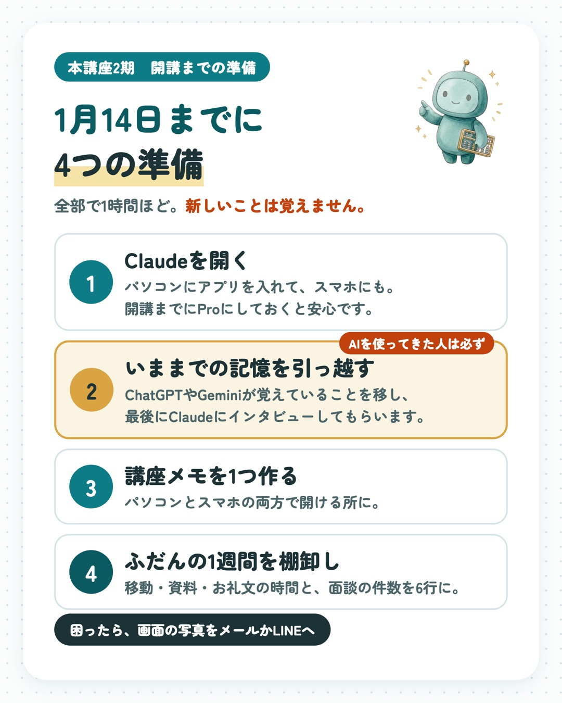
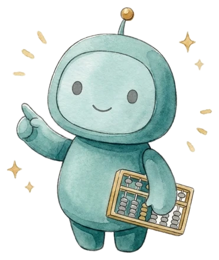
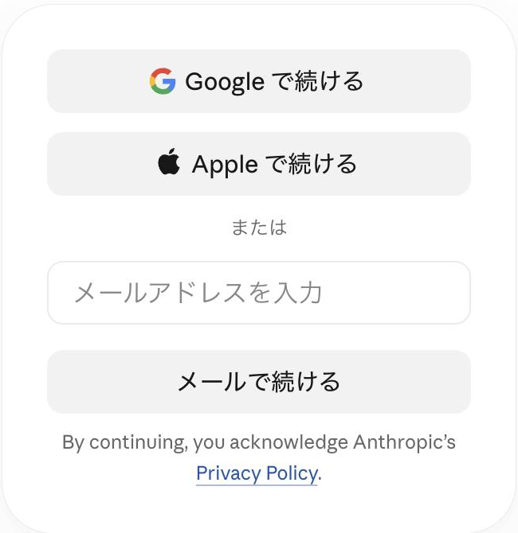
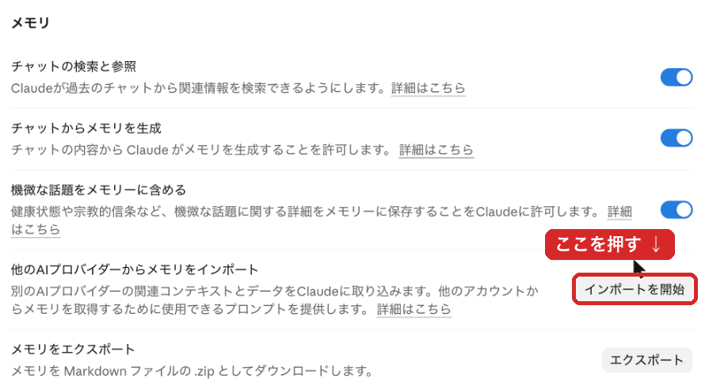
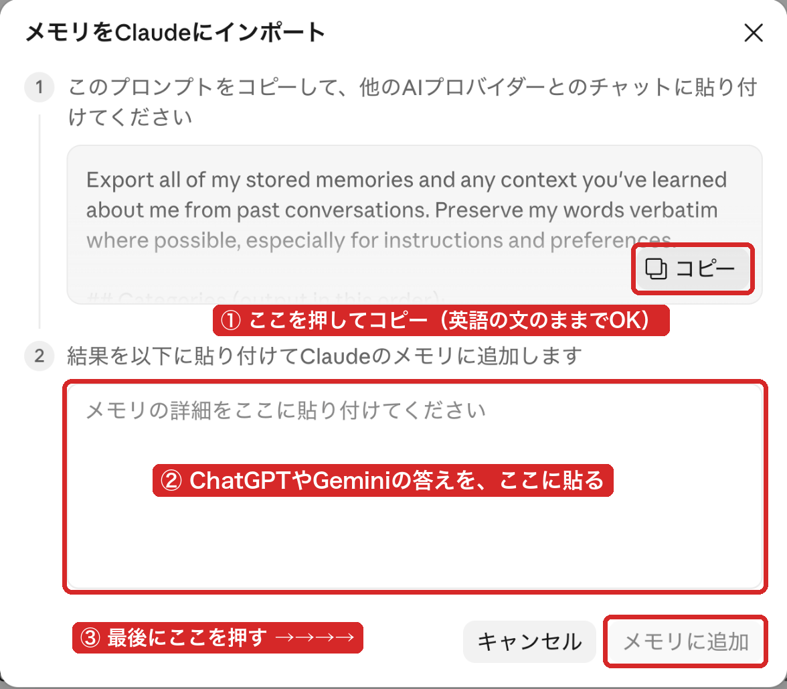

1月14日、最初の夜から
すぐ手が動くように
開講は 2027年1月14日（木）20:00 です。
やることは4つ、全部で1時間ほど。
むずかしい操作はありません。
道具をそろえておくだけです。

最初の夜は、あなたが「選ばれる理由」を言葉にします
Claudeに質問してもらいながら、お客様があなたを選ぶ理由を3つ、短い言葉にするところから始めます。
ここで作った言葉が、このあと作るプロフィールや記事の土台になります。
Claudeがあなたのことを先に知っていると、その夜のうちに3つそろいやすくなります。この準備は、そのためのものです。
・朝5分・面談のあと2分の型で、AIが「調べる・書く・整える・送る」を受け持っている
・あなたの名前で、お客様向けの診断ページが公開されている
1月7日ごろまでに
開講の1週間前が目安です。
4つ目の「棚卸し」だけは、12月に入ってから、ふだんどおりだった1週間を振り返って書くのがおすすめです（年末の特別に忙しい週は避けます）。
もし間に合わなくても、1月14日に来てもらえれば大丈夫です。
どこからやる？
1 → 2-A → 2-B → 3 → 4
1 → 2-B → 3 → 4（2-Aは飛ばします）
終わったら、タップして印を
- 1 Claudeを開くアカウントを作って、パソコンとスマホにアプリを入れる（Proはおすすめ）15分
- AIを使ってきた人2-A いままでの記憶を引っ越すChatGPTやGeminiを使ってこなかった人は、飛ばしてOK15分
- 2-B Claudeにインタビューしてもらう全員。質問に答えるだけ10分
- 3 「講座メモ」を1つ作る5分
- 4 ふだんの1週間を棚卸し6行の数字を講座メモに15分

印は、このスマホ（パソコン）の中にだけ残ります。
1月14日、お会いできるのを楽しみにしています
1Claudeを開く
この講座では、Claude（クロード）というAIを使います。
講座で作る道具は、全部Claudeの中で作ります。
アカウントを作る
- パソコンで、下のボタンからClaudeのページを開きます
- この画面が出ます。「Googleで続ける」か、メールアドレスを入れて「メールで続ける」の、どちらか1つを押します

- 届いたメールのリンクを押すか、届いたコードを入れます（電話番号の確認が出ることもあります）
- 名前などを入れて、入力欄のある画面が出たら、成功です
有料の「Pro」には、Claudeの画面に出る「アップグレード」から切り替えられます。分からなければ、開講後に一緒にやっても大丈夫です。
パソコンとスマホに、アプリを入れる
- パソコンに「Claude」のアプリを入れます（WindowsでもMacでも入ります）
- スマホにも「Claude」のアプリを入れて、同じアカウントで入ります
講座では、パソコンのアプリの「コード」という機能をよく使います。コードは有料の「Pro」から使えるので、開講までにProにしておくのがおすすめです（受講料とは別に、Claudeへ直接お支払い。月3,000円前後が目安で、為替で変わります）。このページの準備だけなら、無料でもできます。
2Claudeに、あなたを知ってもらう
2-A いままでの記憶を引っ越す（AIを使ってきた人）
ChatGPTやGeminiは、あなたの仕事や好みを覚えています。それをClaudeに移しておくと、Claudeが最初から「あなたのこと」を分かった状態で話せます。
使ってこなかった人は、下の「2-B」まで飛ばしてください。
Claudeの左下の名前 →「設定」→「メモリ」を開き、「他のAIプロバイダーからメモリをインポート」の「インポートを開始」を押します。

次の画面が出ます。①の灰色の枠の中は英語の文ですが、そのままで大丈夫です。
- ①の「コピー」を押す
- ChatGPT（またはGemini）の新しいチャットに貼って送る
- 返ってきた答えを読んで、お客様のお名前や契約の話が混じっていたら、その行を消す
- 残りを全部コピーして、②の枠に貼る
- ③「メモリに追加」を押す

プランや時期によって、画面の名前が少し違ったり、この項目が出なかったりすることがあります。そのときは写真を撮って送ってください。開講後に一緒にやっても大丈夫です。
2-B Claudeにインタビューしてもらう（全員）
仕上げに、Claudeのほうからあなたに質問してもらいます。
下の文を「コピー」して、Claudeの入力欄に貼って送るだけです。あとは、質問に思ったまま答えていきます。
答えには、お客様のお名前は入れずに「50代のご夫婦」のように書けば十分です。
最後のまとめに違うところがあれば、「ここは違って、本当は◯◯です」と返すだけで直ります。
3「講座メモ」を1つ作る
「講座メモ」という名前のメモを、1つだけ作ります。
置き場所は、パソコンとスマホの両方で開ける所です。Claudeで作業するのはパソコン、読み返すのはスマホのことが多いからです。
iPhoneとMacの人：「メモ」のアプリ
- iPhoneで「メモ」のアプリを開く
- 右下の、えんぴつと紙のマークを押す
- 1行目に「講座メモ」と打つ（これが題名になります）
同じApple IDなら、Macの「メモ」にも自動で出てきます。
それ以外の人：Googleドキュメント
- パソコンで、下のボタンからGoogleドキュメントを開く
- 左上の「無題のドキュメント」を押して、「講座メモ」に変える
- スマホにも「Googleドキュメント」のアプリを入れると、同じメモが開けます
LINEを使っている人は、LINEの「Keepメモ」（自分だけが見られるトーク）でもかまいません。
講座の3か月で作るもの（選ばれる理由、記事、プロフィール文など）は、全部ここにためていきます。
4ふだんの1週間を棚卸し
ふだんの1週間の時間と件数を、6行の数字にしておきます。
何のため？ 3か月後に同じ6行を数え直して、「移動や書きものの時間が、これだけ空いた」を自分の目で確かめるためです（講座の中では「換算表」と呼びます）。
↓ 見本の表です（ここには書き込めません）
| 項目 | 1週間あたり |
|---|---|
| 移動にかかっている時間 | ＿＿時間 |
| 資料や提案書を作っている時間 | ＿＿時間 |
| お礼・フォローの文を書いている時間 | ＿＿時間 |
| 面談の件数 | ＿＿件 |
| 面談のうち、次回につながった件数 | ＿＿件 |
| 新しい相談が入ってきた経路と件数（例：紹介2件・SNS0件） | ＿＿ |
Claudeに聞いてもらいながら埋める（おすすめ）
ここも、Claudeにインタビューしてもらうのがいちばん楽です。下の文を貼って送り、質問に答えていくと、最後に6行の表ができあがります。それを講座メモに貼れば終わりです。
自分で書く人は、下のボタンで6行をコピーして講座メモに貼り、数字を打ちます。
1週間だと0になる行は、0のままでも、先月を思い出して「月◯件」と書いても構いません。
この表は、自分を採点するものではありません。3か月後に「ここが空いた」と分かるための目印です。
Claudeの基本、4つだけ
手を動かすのは1月からです。いまは「そういうものがあるんだな」と読んでおくだけで大丈夫です。
① 「チャット」と「コード」、2つある理由
話しながら考える、文章を作る。できた答えは、自分でコピーして使います。
パソコンの中で、実際に手を動かします。ファイルを作る、ページを公開する、毎朝の作業を回す、まで。
この講座では、基本はコードで大丈夫です。名前は「コード」ですが、プログラミングの知識は要りません。ふだんの言葉で頼むだけです。相談や文章づくりも、コードの中でそのままできます。
チャットは、スマホで外から相談したいときに使います。
コードは、パソコンのClaudeアプリの上のほうにある「Code」から開きます（Proから使えます）。
② モデル（Claudeの頭の種類）
入力欄の近くで、どの頭で考えるかを選べます。
ふだんはこれ。迷ったらOpus。
いちばん重い仕事用。長い作業や、Opusでうまくいかなかったときに。使える量を多く使います。
軽い作業を速く。使える量を節約したいときに。
プランによっては、出てこないモデルもあります。
③ 「許可しますか？」と聞かれたら
コードでは、Claudeがファイルを作ったり変えたりする前に「〜してもいいですか？」と確認してきます。
中身を見て、頼んだとおりなら「許可」。よく分からないときは断って、「いま何をしようとしているの？」と聞けば、言葉で説明してくれます。
④ どこまで自動で任せるか（モード）
入力欄の近くの切り替えで、どれだけ確認してもらうかを選べます。
- 最初は「毎回聞く」（Manual）で始める
- 慣れてきたら「ファイルの変更は任せる」（Accept edits）や「自動」（Auto）に
どのモードでも、お金の支払い・メールの送信・何かを消す作業は、自分の目で確かめてから進めます。
2026年11月時点の画面で書いています。ボタンの名前は、アプリの更新で少し変わることがあります。「自動」はプランによって出てこないこともあります。
教材サイトなどは、1月にお届けします
- 教材サイトへの招待
- 2期生の連絡の場への入り方
- 1月14日のZoomの入り方
届くまでは、このページの4つだけで十分です。
4つ終わったら、このページのリンクが届いたメールに「準備できました」と一言返信してください。こちらでも、そろった方を確かめておきます。
画面の写真を送ってください
うまく進まないときは、画面の写真を撮って、このページのリンクが届いたメールにそのまま返信してください。お客様のお名前などが写っていたら、そこは隠してから送ってください。
LINEのほうが楽な人は、こちらからどうぞ。
本講座の公式LINEを開く開いたら、写真を送ってください森川か運営スタッフがお返事します。
金融AIカレッジ 森川 満章
本ページは情報提供です。より良い案内にするため、ページが見られた回数などを計測しています。